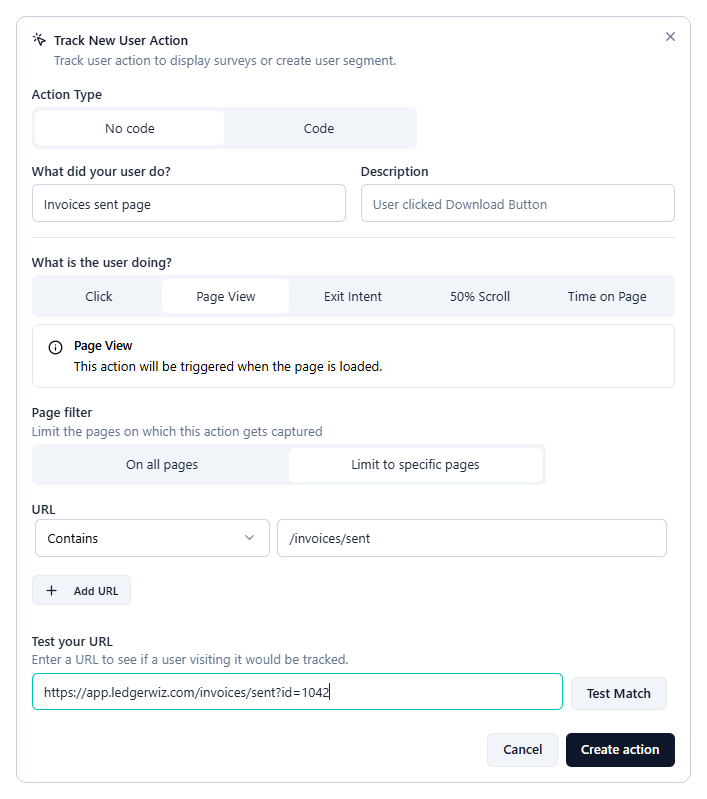

Trigger a survey after a specific user action
This guide shows you how to show a survey right after a user completes a key task, such as sending their first invoice. You create an action that records when the task happens, then attach it to your survey as the trigger.
The examples follow LedgerWiz, an invoicing app that asks new users how easy it was to send their first invoice.
Before you begin
- Install the Formbricks widget in your app. See Install the widget and identify logged-in users.
- Create a survey in draft. See Build your first in-app survey.
Actions are available on all plans, including Hobby.
Choose an action type
Pick the action type that matches how the task ends in your app:
| Action type | Use it when | Needs a developer? |
|---|---|---|
| Page View (no code) | The task ends on its own page, such as /invoices/sent. |
No |
| Click (no code) | The task ends with a button click you can identify by its CSS selector or text. | No |
| Code action | The task has no unique page or button, or you need the trigger to survive redesigns. | Yes, one line of code |
Formbricks also offers Exit Intent, 50% Scroll, and Time on Page actions. They suit browsing behavior, such as a visitor leaving your pricing page, more than finishing a task.
LedgerWiz uses a code action. Its confirmation page can also open from other places in the app, so the page URL alone doesn't prove that an invoice was just sent.
Use one action per task
Don't create a page view and a code action for the same task and attach both. Each one can trigger the survey, so one invoice can count twice.
Create a Page View action
- In Formbricks, go to Settings > User Actions.
- Click Add action.
- In the Track New User Action dialog, under Action Type, select No code.
- In What did your user do?, enter a name, such as Invoices sent page.
- Under What is the user doing?, select Page View.
- Under Page filter, select Limit to specific pages. Under URL, choose Contains and enter
/invoices/sent. To match more pages, click Add URL. - Under Test your URL, paste a real URL from your app, such as
https://app.ledgerwiz.com/invoices/sent?id=1042, and click Test Match to check that the rule matches it. - Click Create action.
Use Test Match to check your rule against a real URL from your app, including any query string.

Figure 1: A Page View action limited to the invoice-sent page.
Create a Click action
- In Settings > User Actions, click Add action.
- In the Track New User Action dialog, under Action Type, select No code.
- In What did your user do?, enter a name, such as Send invoice button.
- Under What is the user doing?, select Click.
- Turn on CSS Selector and enter the button's selector, such as
#send-invoice. Or turn on Inner Text and enter the button's label, such asSend invoice. - (Optional) Under Page filter, select Limit to specific pages to count clicks on one page only.
- Click Create action.
Redesigns can break Click actions
If someone renames the button or changes its CSS class, the action stops matching, and Formbricks doesn't warn you. Recheck Click actions after each release that touches that page.
Create a code action
- In Settings > User Actions, click Add action.
- In the Track New User Action dialog, under Action Type, select Code.
- In What did your user do?, enter a name that describes the action, such as Sent an invoice.
- In Key, enter a key, such as
invoice_sent. Your developer uses this key in the app, so it must match exactly. - Click Create action.
-
Ask your developer to add this call right after the task succeeds in your app. The key must match exactly.
// After the invoice is sent successfully formbricks.track("invoice_sent");

Figure 2: A code action with the key invoice_sent.
Attach the action to your survey
- Open your survey and select the Settings tab.
- In Survey Trigger, click Add action and select the action you created.
- To start the survey from more than one place, add more actions. Any one of them can trigger the survey.
- Click Activate, or Save if the survey is already active.
Verify the trigger
- Open your app with
?formbricksDebug=trueat the end of the URL, and open the browser console. - Complete the task. In LedgerWiz, that's sending an invoice.
-
In the console, look for a line like this:
Formbricks: Action "invoice_sent" tracked
If the next line is No active surveys to display, the trigger is working, and one of the other checks is stopping the survey, such as targeting or recontact options. See How in-app surveys work, or Troubleshoot a survey that isn't appearing (in progress).
If no action line appears, check that the code action key matches exactly, or that the page view rule matches the real URL.
See also
- How in-app surveys work
- Target only new users and prevent repeat surveys (in progress)
- Troubleshoot a survey that isn't appearing (in progress)
← Previous: Build your first in-app survey